Perfecting the Springform Pan and Crusts
I have many different crust recipes that stand on their own and others that are part of particular cake/pie recipes. Creating a perfectly firm, crunchy-chewy pie crust requires only a few essential ingredients. You can use a single type of nut or seed as a base or any combination of your favorites—either way; it’s hard to go wrong. You can make them in advance and store them in the freezer.
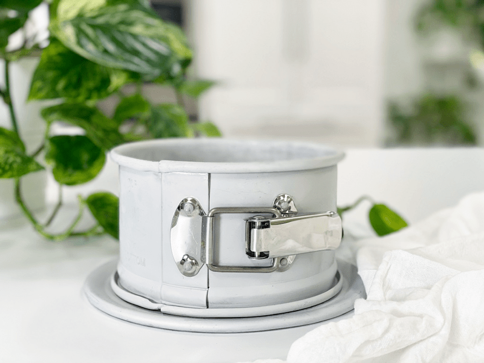
In the baking/pastry world, crusts are typically more complicated due to their delicate butter ratios — worries of overworking the dough plague, even the experienced baker. But raw, nut and/or seed-based crusts are simple to make, no fuss, no worries. But today, I am not going to talk about how to create a crust (if interested, I have many recipes here)… No, today, I am going to share a few tips and tricks on how to create an aesthetically pleasing crust that can be used in both sweet and savory applications.
Supplies that I use when Creating Cheesecakes
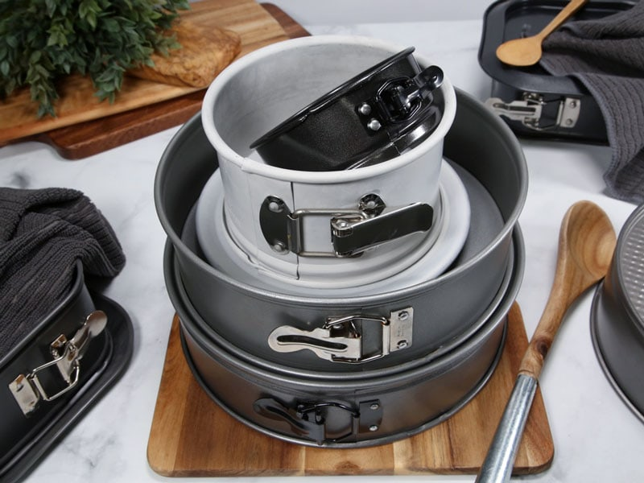
Springform Pans
Since entering the world of raw pastry, I have come to LOVE springform pans. Before raw foods, I never owned one, but then again, I never baked/cooked. They come in so many different shapes and sizes, so watch out; if you’re anything like me, you will soon own a collection.
- The anatomy of a springform pan is designed to give recipes a clean-sided, photo-perfect finish when they come out of the pan.
- There are two parts: a round base and a high-sided band with a clamp. The band closes with a spring-loaded clip — hence the term “springform” — holding the bottom firmly in place.
- You can buy a springform pan in a variety of sizes, from 8 inches (20 cm) to 9 inches (23 cm) to 12 inches (30 cm). Most recipes for cakes and pies call for a 9 inch (22.9 cm) pan, but you can pick a size based on your needs.
- Before purchasing a springform pan, try opening and closing the spring lock a few times. Pull the spring on the round part of the pan open and then close it to confirm it works properly.
- You should hear a snapping sound when the spring locks. Only buy a springform pan that has a working lock.
- Choose a higher quality pan to avoid immediate leaking issues or to help reduce the chance of a problem developing in the future.
What if I don’t Own a Springform Pan?
If you’re in a pinch, you can use a traditional cake pan. Be sure to line the pan with parchment paper or plastic wrap, leaving plenty of material hanging outside of the pan. By doing this, it allows you to lift the edges of the paper out from the pan, which will create a sling for your cake and hopefully keep it intact as it’s removed from the pan.
Clear Cake Collars (optional)
I recently started using acetate cake collars on the inside of my pans. These are wonderful to help prevent the crust from sticking to the sides of the pan because you can just peel the acetate away, wash, and reuse. When I don’t use them, I run the risk of the crust or batter sticking to the edge of the pan, which can cause cracking when I remove the springform pan collar.
Cake collars are one of those pastry chef secret weapons that I think everyone should know about! They’re most often used to line the sides of pans when creating cheesecakes or soft desserts that have structure. They also help give the cake clean, crisp sides. I have seen people line the edging of their pans with plastic wrap; this leads to a crinkly, wrinkly pattern on the edge of the cake.
- Think of it as malleable, clear plastic that is food safe.
- Clear acetate strips are used around the sides of desserts and cakes to hold filling in.
- They come in either transparent acetate sheets or plastic cake liners in a variety of sizes to match your cake dimensions.
- They help prevent the batter from sticking to the edge of the pan, which gives the dessert a clean edge without cracks.
- These collars can also be used to extend the height of the pan. This method yields nice clean cakes in the exact shape of the pan, even when the pan is shallower than the cake.
- If creating a cheesecake that doesn’t have a crust coming up the edge, be sure to freeze it first before removing the cake collar so it will easily pull away from the sides.
- They are great for creating layered cakes when you want all of the scrumptious layers to be seen.
What if I don’t have Clear Cake Collars?
Not to worry, I will provide an alternate option for you. Simply cut strips of parchment paper and use those to make a liner for the pan’s sides. You won’t be able to extend the walls of your pan with parchment paper since it isn’t as sturdy as the acetate collars, but it will help with the removal of the springform pan ring.
Items to help Smooth the Crust
I wanted to take a few moments to discuss a few tricks of the trade that will give your crusted desserts that touch of professionalism. Have you ever looked at photos of raw cheesecakes and wondered how they get the crust to look so perfect? I know I have, and that curiosity led me to play around in the kitchen, so I too could create such beautiful crusts.
Below, I will be sharing how to create either just a crust base or a crust that also comes up with the sides of the cheesecake/pie. But, here a few tools that I use to create smooth, even crusts.
Flat bottomed, straight-edged measuring cup
- What I love about using this tool to get the job done is that it is a multi-purpose kitchen tool.
- Its main job is a measuring cup that doubles as a crust smoother-outer.
- It can be used when just creating a base crust as well as a crust that goes up the edges of the pan. See the photos below.
- One drawback is that most of these measuring cups come with handles. Therefore the springform pan will need to be large enough so you can move the measuring cup around the inside of the pan.
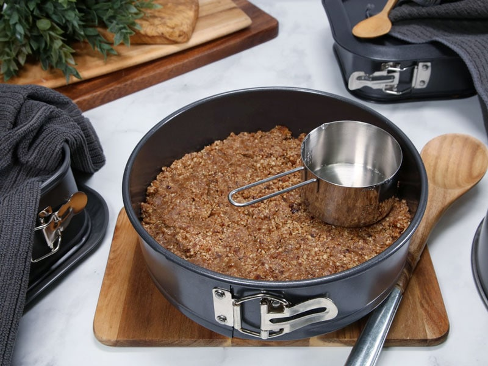
Fondant and Cake Smoothers
- I found a pack of four of these for $7.99 on Amazon. Only two will work for today’s application.
- The first one is the smoothing tool with round corners. This tool works for smoothing out just the base crust.
- The second one is the smoothing tool that had a flat surface for the base crust and a side smoother for the edges of the crust. This tool only works for squared springform pans.
- The other two smoothers can be used with making raw cakes.
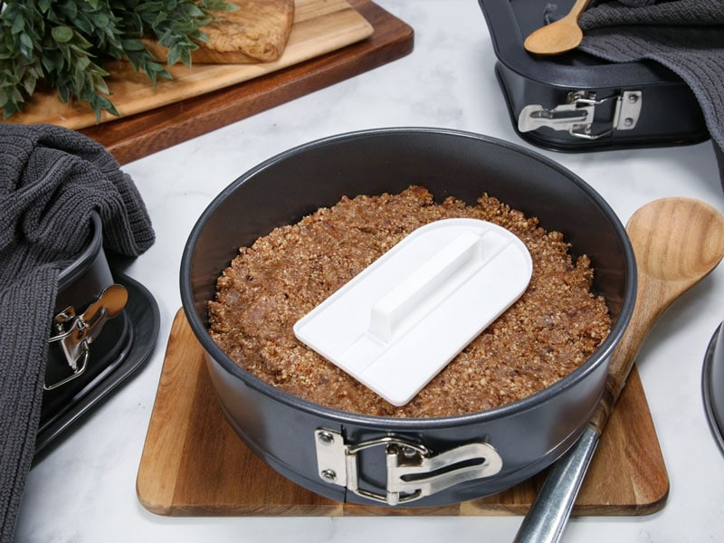
What if I don’t have any of these tools?
That’s ok! Having the right tools can be fun, exciting, and will produce consistent results, BUT you don’t have to have them. You can use your hands to smooth out the crust, or you can use a drinking glass that is flat bottomed and has a straight edge. BE creative and look around your kitchen.
Assembling the Springform Pan Cake
Taking a few minutes to prepare the pan will save you heartache and frustration when it comes to removing your creation from the pan. For the sake of demonstration, I will be referring to a 9-inch springform pan, but do know that this technique will work on any sized pan.
Lining the Base of the Pan
- Assemble a springform pan with the bottom facing up, the opposite way from how it comes assembled.
- This will help you when removing the cheesecake from the pan, not having to fight with the lip.
- Line the bottom of the pan with parchment paper or plastic wrap.
- Do not use wax paper.
- This allows you to transfer the pie onto another plate and prevents the crust from sticking to the pan.
- You can use pre-cut cake liners, but they are size-specific, so keep that in mind.
- Pull the spring closed to lock the two pieces together. Make sure everything is snug and latching properly before adding the crust and filling.
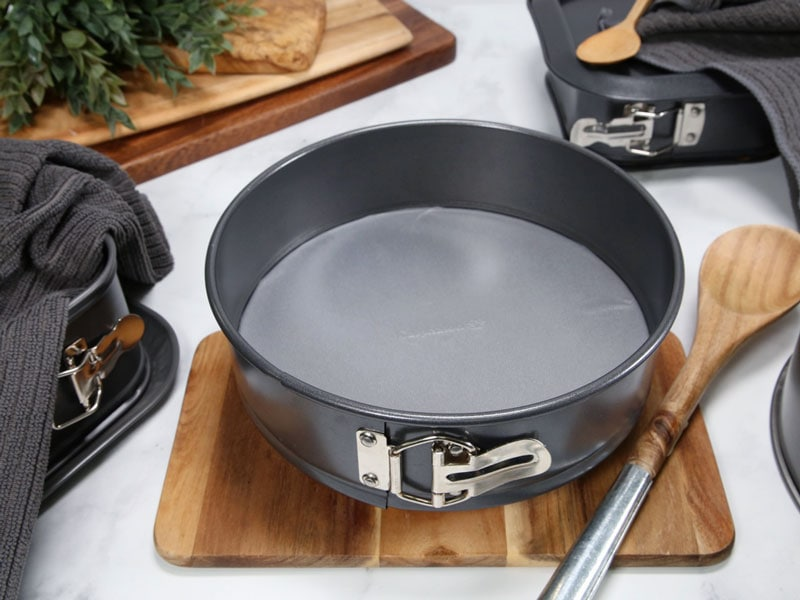
Lining the Edge of the Pan
As discussed above, you can either use acetate cake collars or make your own with parchment paper. It all depends on what you are creating. If you want to create a tall cake that extends above the height of your pan, use the acetate cake collars since they offer more structure. If you wish to line the inside of your pan for the ease of removal, then parchment paper will work just fine.
Parchment Paper
- With the springform pan assembled, and the base of the pan lined, line the edges of the pan with the parchment collar.
- Cut the parchment paper to the height of the pan.
- Cut the collar 1/2″ longer than what is needed so the ends of the collar overlap so you can secure them.
- It’s best to tape the ends of the collar together to prevent movement when adding the crust.
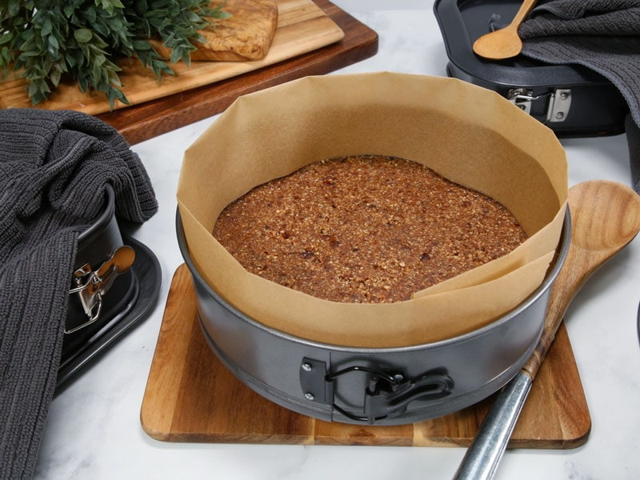
Acetate Collar
- If using acetate collars to create height, be sure to order the right height.
- Then cut the collar 1/2″ longer than what is needed so the ends of the collar overlap.
No Collar
- If you don’t want to use the clear collars, you can lubricate the edge of the pan with a thin layer of coconut oil to help your cheesecake slide-out unmarred. It isn’t always a fool-proof technique, but a grease-free pan almost always results in sticking.
- If you use a different oil other than coconut oil, make sure that you use a neutral based oil, so it doesn’t affect the flavor of the dessert.
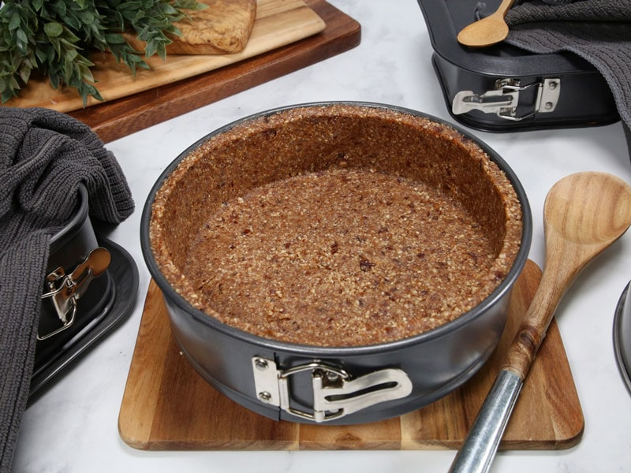
Adding the Crust Batter
Base only Crust
-
Distribute the crust evenly on the bottom of the pan, using even and gentle pressure.
-
If you press too hard, it might stick to the base of the pan, making it hard to remove slices. Thus the reason why I suggest lining the base and edges of your pan, if at all possible.
- Using a flat-bottomed measuring cup (that has straight sides) can help you create a nice even crust with clean edges.
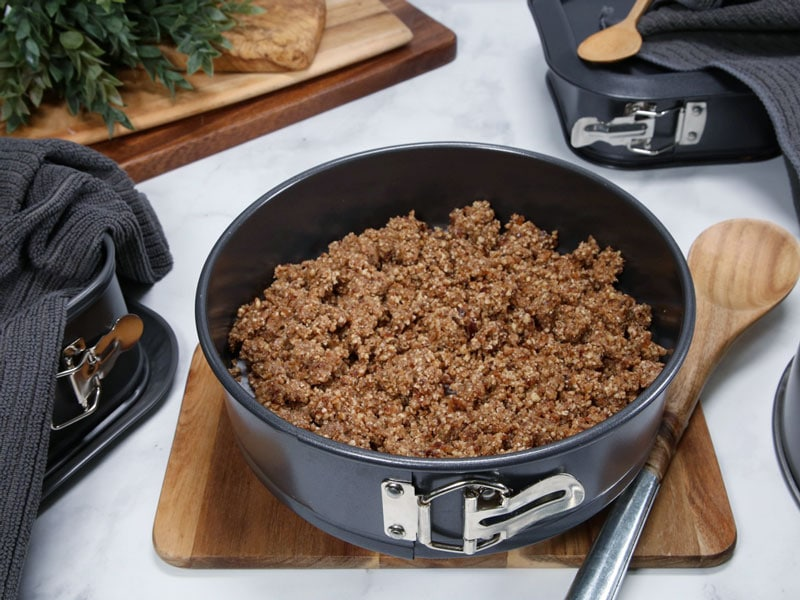
Loosely spread the crust batter over the base of the pan.
I am using a flat-bottomed, straight-edged measuring cup… smooth the base of the crust, so it is even.
If you don’t own a measuring cup as described above, you can also use a fondant smoother, as shown in the photo.
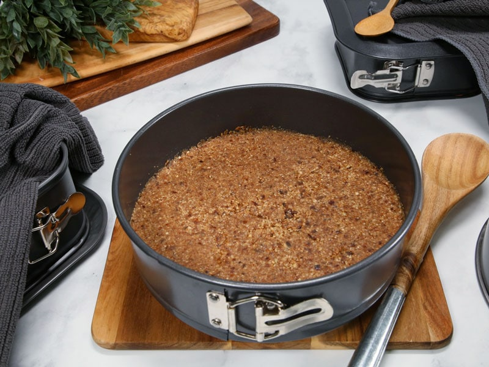
A beautifully even pressed crust that is ready to be a foundation for your creation!
Base and Side Crust
- Distribute the crust evenly on the bottom of the pan, using even and gentle pressure.
- Start by bringing the crust batter up the edges of the springform ring.
- You can bring the crust all the way up to the top of the ring edge to create a cleaner, more modern look to the cheesecake, or you can just bring the batter part way up the ring, creating a more rust appearance.
- Once the edges are pressed into place, press the base of the crust evenly and firmly covering the base of the pan.
- Make sure that you don’t spread the crust batter too thin.
- Using a flat-bottomed measuring cup can help you create a nice sharp angle at that juncture. It makes a nice even layer of crust on both the bottom and the sides.
- As shown below, use the flat bottom of the cup to press both down and out towards the sides.
- You may need to wipe the edges of the measuring cup every so often.
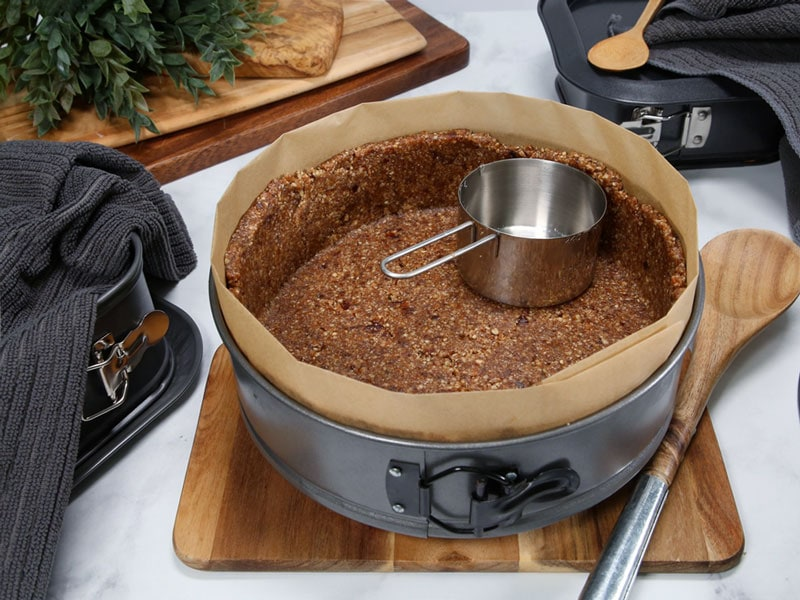
With a collar in place, press the sides of the crust into place with the measuring cup. Make sure the crust is the same thickness all the way around the edge of the pan.
Removing the Springform Band
- After the cheesecake (or other treat) is done, simply release the clamp and remove the band.
- You can either place the pan on a countertop and lift up the band or place the pan on a wide jar and drop down the band.
- You can serve it directly on the base or transfer it to your favorite platter.
- If you didn’t use any collar around the springform pan, use caution when removing the band.
- Place the pan on a flat surface and spring the latch. Open the band 1/4 inch and look closely to be sure it has come away cleanly from the sides of your dessert.
- If it sticks, wipe your knife clean and run it around the problem area once more.
- When you’re satisfied that the dessert has released from the band, open it the rest of the way.
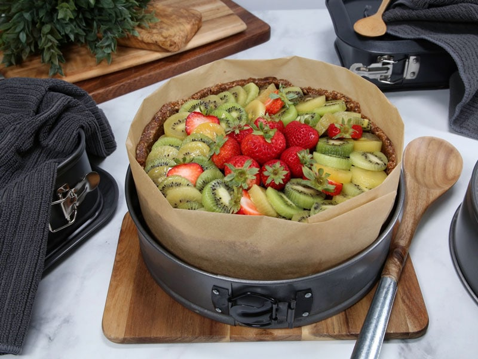
Set the springform pan on a smaller container, release the latch on the ring of the pan and drop or lift it off of the cake.
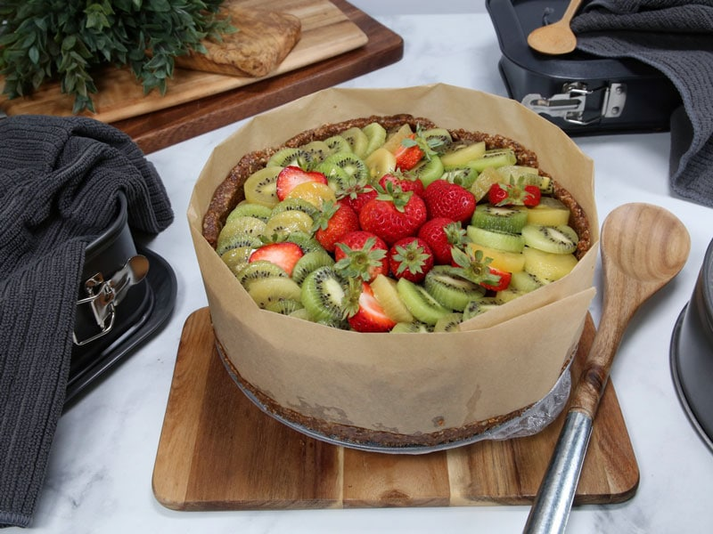
Here is a parchment collar that I made for the ease of removal of the pan ring.
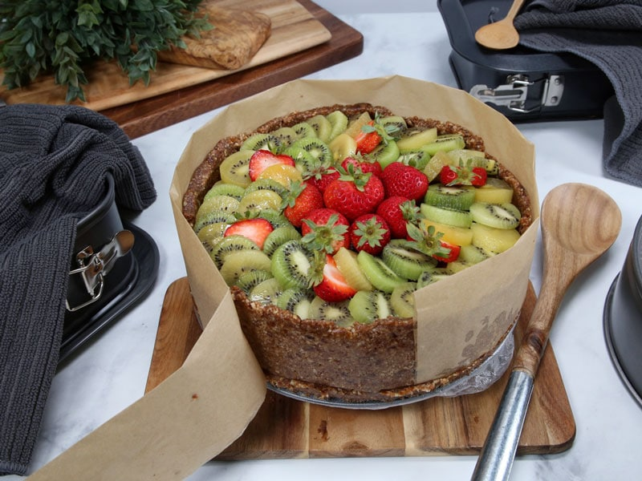
Remove the collar.
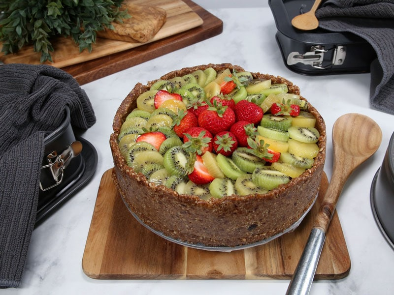
With your finger, smooth out any defects in the crust, and you are ready to go!
Let’s Go Shopping
Prices are subject to change.
Springform Pans
Liners
Crust / Cake Smoothers
Nouveauraw.com is a participant in the Amazon Services LLC Associates Program, an affiliate advertising program designed to provide a means for us to earn fees by linking to
Amazon.com and affiliated sites – at no extra cost to you.
Thank you for your support! amie sue
© AmieSue.com